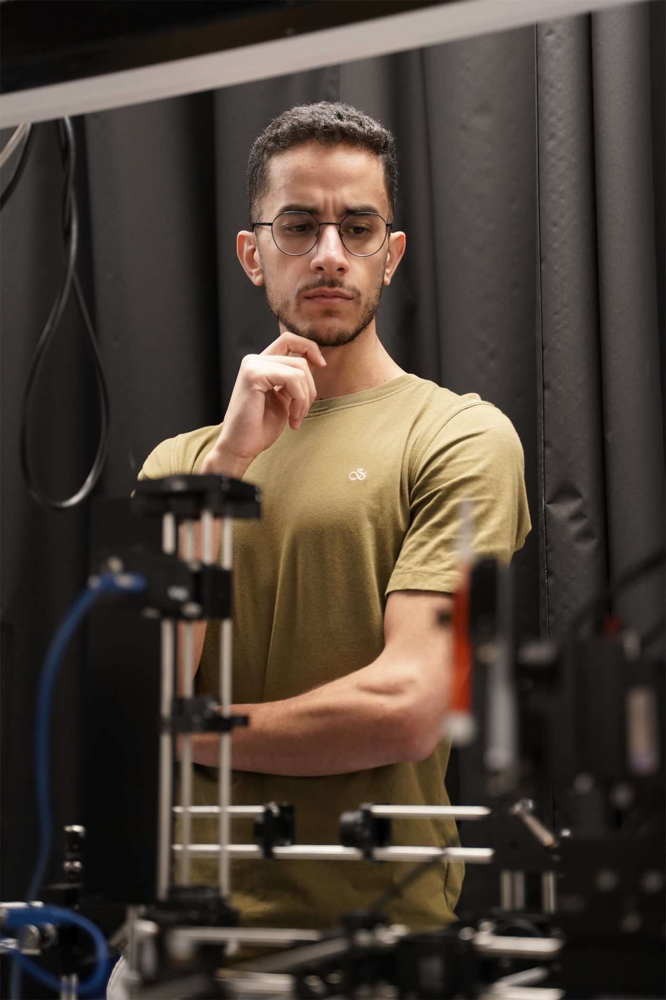
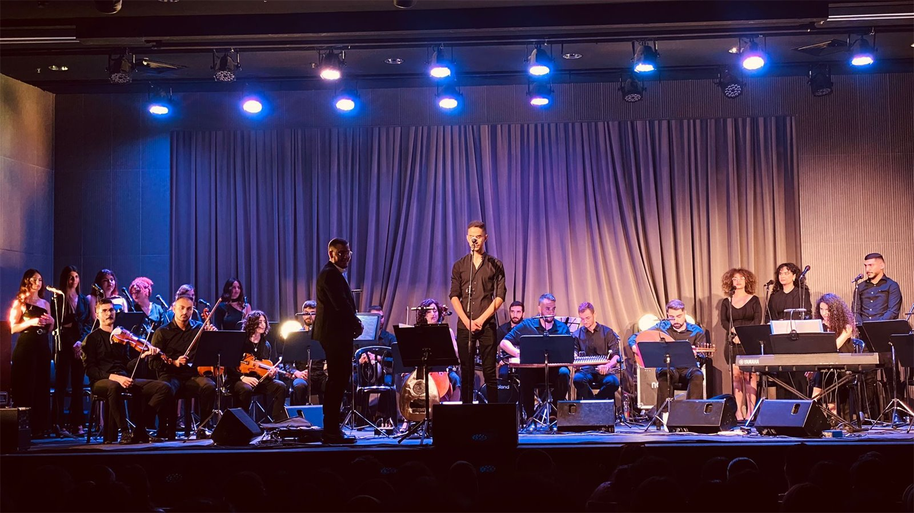

About me
Hardware that turns an idea into working silicon.
I am an M.Sc. student in electrical engineering at Tel Aviv University, specialising in digital and mixed-signal hardware design. Alongside my studies I serve as a teaching assistant and tutor, guiding students through digital electronic circuits, physics and VLSI, and I supervised four undergraduate students in their final ASIC design projects. Teaching has strengthened my technical depth while reinforcing my passion for learning and research.
My primary interest lies in hardware systems and integrated circuit design. I am driven by the challenge of transforming theoretical ideas into working silicon, and in a PhD I want to keep working on low-power arithmetic for signal processing on silicon, from the algorithm to the measured chip. For me, engineering is not just a profession; it is a mindset built on curiosity, precision and innovation.
Beyond the lab, music plays a central role in my life. I play the oud, perform with the Tel Aviv University oriental music band, and build instruments: a self-built electronic oud and a custom-designed platy oud, where engineering and craft meet.
Languages: Arabic (native), Hebrew (fluent), English (professional).
Contact
